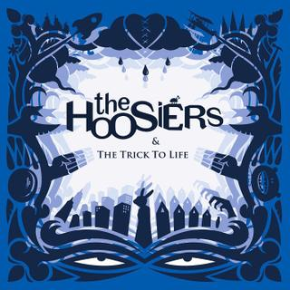
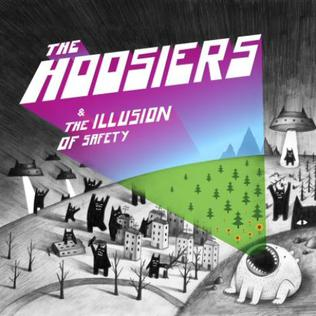
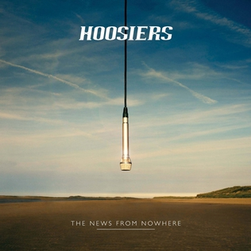
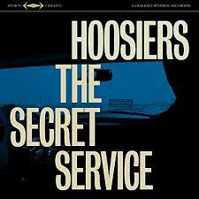

The Hoosiers
The Hoosiers are a British Indie and Pop Rock band started in 2003. They were formed in Indiana, "Hoosier" meaning an inhabitant of Indiana, although they orgininate from Berkshire, England. Compared to other bands they are much smaller, less popular and release new music sporadically but still attract an audience drawn to classic indie and electropop. The Hoosiers' first two singles, "Worried About Ray" and "Goodbye Mr. A," charted at number five and four in the U.K. Charts and their debut album The Trick to Life, released in October 2007, topped the charts. In the United Kingdom, the record went quadruple platinum, and the Hoosiers toured for several years before releasing their next album, The Illusion of Safety, in 2010.
Active Members
- Irwin Sparkles- Lead vocals, lead guitar (2003-present)
- Alan Sharland- Drums (2003-present)
Former Members
- Tony Byrne- Bass (2003-2007)
- Tom Easey- Rythym Guitar (2003-2007)
- Martin Skarendahl- Bass, Backing Vocals (2007-2015)
- Sam Swallow- Keyboards, Backing Vocals (2013-2016
Greatest Hits
- Goodbye Mr. A
- The Hoosiers Top hit, released in 2007
- Peaked #4 on UK's Single Chart just 2 weeks after it's release.
- Part of the soundtrack in FIFA 08.
- Worried About Ray
- The Hoosiers debut song released in 2007; The Hooisers first single
- Peaked #5 on UK's Single Chart within 3 weeks of it release.
- Choices
- The Hoosiers Fifth Single released in 2010
- The song is actually a small portion of a song called "Stop Giving Me Verses", a over 40 minute song composed of multiple random verses with varying levels of quality.
- Cops and Robbers
- The Hoosiers Fourth Single released in 2008
- "Cops and Robbers" is also the name of a children's game and is symbolizes children's simple interprataion of the world leading to negative repercussions when they get older.
Albums
| The Trick to Life |
 |
- Worried About Ray
- Worst Case Scenario
- Run Rabbit Run
- Goodbye Mr. A
- A Sadness Runs Through Him
- Clinging on for Life
- Cops and Robbers
- Everything Goes Dark
- Killer
- The Trick to Life
- Money to Be Made
- The Feeling You Get When
|
| The Illusion of Safety (Bumpy Ride) |
 |
- Choices
- Bumpy Ride
- Who Said Anything (About Falling in Love)?
- Unlikely Hero
- Lovers in My Head
- Live by the Ocean
- Devil's in the Detail
- Glorious
- Made to Measure
- Gidddy Up
- Sarajevo
- Little Brutes
|
| The News form Nowhere |
 |
- Somewhere in the Distance
- Make or Break (You Gotta Know)
- My Last Fight
- Fidget Brain
- Handsome Girls and Pretty Boys
- The News from Nowhere
- Rocket Star
- To the Lions
- Upset
- Weirdo
- Impossible Boy
- Nathan's Loft
|
| The Secret Service |
 |
- Pristine
- The Wheels Fell Off
- Up To No Good
- I Will Be King
- Dancers In the Dark
- The Most Peculiar Day of Your Life
- Runs in the Family
- The Secret To Happiness
- (Don't Make) Eye Contract
- Wearing Down the Carpet
|